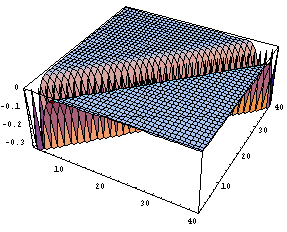
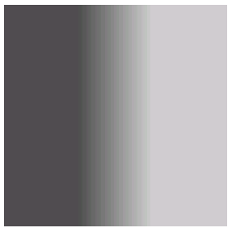
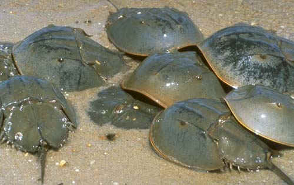

Ernst Mach was an Austrian physicist and philosopher. He is also known for several visual illusions. One of the illusion is called "Mach bands"
Let us look up gray-scale picture of the density plot based on the intensity given by
 
What Mach noticed was that the left knee of the ramp looked too dark, and the right knee looked too bright. The apparent brightness does not correspond to objective light intensity.
What is neural basis for this? (Lateral Inhibition)
Eye of Limulus Polyphemus (Horseshoe crab): A example of simple distributed neural computation (Hartline won the 1967 Nobel prize for this work that began in the 30's).

from http://www.aqua.org/animals/species/prhcrab.html
The compound Limulus eye is composed of many small independent eyes called ommatidia. When active, the ommatidia mutually inhibit each other by lateral inhibition. There are many well-documented experiments.
Given the experimental data and their interpretation, it is possible to write a simple approximate equation for the behavior of ommatidia. Suppose that we have a group of ommatidia, each with activity f[i]. Suppose, if there was no inhibition, the actitivity will be e[i] spikes per second. Now assume that the cells are interconnected by synaptic weights W[i, j]. Then
f[i] = e[i]+Sj W[i, j]f[j] --- the Limulus equation
In vector form
f = e + W.f